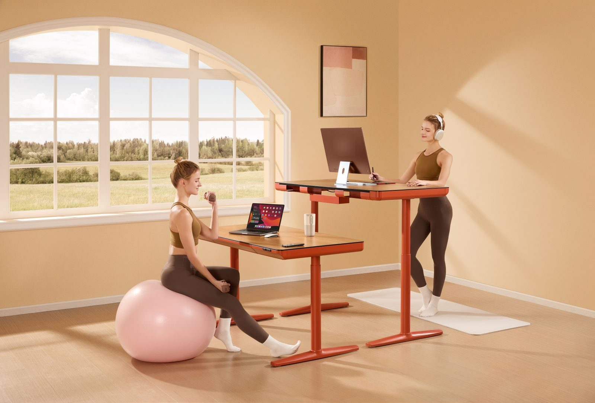

Home / Guides / Standing Desk Mats

Best Standing Desk Mats (2026): Thickness, Size & How Much Higher Your Desk Must Go
A standing desk only helps if you actually stand at it, and a hard floor makes that harder than it needs to be. A cushioned mat is the cheapest upgrade most standing desk owners can make. Two things are easy to miss: a mat raises you by up to its thickness, so your desk has to go a little higher, and a contoured mat works very differently from a flat kitchen-style one. This guide compares four popular mats sold on Amazon US on thickness, size and warranty, and shows how much higher your desk needs to go on each.
Quick picks
| Product | Best for | Amazon |
|---|---|---|
| Ergodriven Topo | Moving while you stand (5'5" and taller) | Check price |
| Ergodriven Topo Mini | Smaller spaces and people 5'4" and shorter | Check price |
| ComfiLife Anti Fatigue Floor Mat | Best budget flat mat | Check price |
| FEATOL 0.9" Anti Fatigue Mat | Thickest flat mat here | Check price |
How to choose
1. Flat or contoured
Flat mats (like ComfiLife and FEATOL) give you an even cushion to stand on. Contoured mats (like Ergodriven's Topo) add raised, sloped areas so you shift your weight and change stance more often. Contoured mats cost more and take some getting used to; flat mats are cheaper and familiar.
2. Thickness: more isn't always better
Most standing mats are about 0.75–1 in thick. Thicker foam feels softer, but very soft foam can feel unstable. Whatever you pick, it raises you by up to its thickness (a little less once the foam compresses under you).
3. Your desk has to go higher
Your ideal standing desk height is about your standing elbow height, and a mat lifts your elbows with you. Add the mat's thickness to the height from our calculator or desk height chart. This matters most for tall people whose desk is already near its top setting; see the table below.
4. Size and floor space
A 20 × 32 in mat is enough to stand on and shift your feet. Larger contoured mats give you more positions but take up more floor and have to be slid aside when you sit, so your chair casters don't roll over them.
5. Hard floor or carpet
Mats are designed for hard floors. On thick carpet a soft mat can feel mushy and creep around. A firmer, heavier mat helps, or put it on a hard chair mat.
Specs side by side
| Product | Type | Size | Thickness | Material | Warranty | Price tier |
|---|---|---|---|---|---|---|
| Ergodriven Topo | Contoured | 29 × 26.25 in | 0.85 in flat area; 2.7 in at highest | Polyurethane foam, no PVC | 16 years (Ergodriven) | Premium |
| Ergodriven Topo Mini | Contoured | 25.2 × 19.2 in | 2.47 in at highest (flat area not listed) | Polyurethane foam, no PVC | 16 years (Ergodriven) | Mid-range |
| ComfiLife Anti Fatigue Floor Mat | Flat | 20 × 32 in (other sizes available) | 0.75 in | Memory foam, non-slip backing | Not listed | Budget |
| FEATOL 0.9" Anti Fatigue Mat | Flat | 20 × 32 in (other sizes available) | 0.9 in | High-density foam, beveled edges | Not listed | Budget |
From manufacturer pages and Amazon listings; see the sources under each mat. Sizes are for the variant linked; several mats come in other sizes.
How much higher your desk needs to go
Your standing desk should put the keyboard at about standing elbow height, and a mat lifts your elbows by up to its thickness. Here's the desk height for your body with no mat, a 0.75 in mat and a 0.9 in mat (from our desk height chart, regular shoes), and which desks from our standing desk guide still reach it on the thicker mat.
| Your height | No mat | 0.75 in mat | 0.9 in mat | Desks that reach it (0.9 in mat) |
|---|---|---|---|---|
| 5'0" | 38.8″ | 39.5″ | 39.7″ | FlexiSpot E6 Bamboo, Vari Classic Electric Standing Desk 60x30, FlexiSpot EN1 One-Piece |
| 5'2" | 40.0″ | 40.8″ | 40.9″ | FlexiSpot E6 Bamboo, Vari Classic Electric Standing Desk 60x30, FlexiSpot EN1 One-Piece |
| 5'4" | 41.3″ | 42.1″ | 42.2″ | FlexiSpot E6 Bamboo, Vari Classic Electric Standing Desk 60x30, FlexiSpot EN1 One-Piece |
| 5'6" | 42.6″ | 43.3″ | 43.5″ | FlexiSpot E6 Bamboo, Vari Classic Electric Standing Desk 60x30, FlexiSpot EN1 One-Piece |
| 5'8" | 43.8″ | 44.6″ | 44.7″ | FlexiSpot E6 Bamboo, Vari Classic Electric Standing Desk 60x30, FlexiSpot EN1 One-Piece |
| 5'10" | 45.1″ | 45.8″ | 46.0″ | FlexiSpot E6 Bamboo, Vari Classic Electric Standing Desk 60x30, FlexiSpot EN1 One-Piece |
| 6'0" | 46.3″ | 47.1″ | 47.2″ | FlexiSpot E6 Bamboo, Vari Classic Electric Standing Desk 60x30 |
| 6'2" | 47.6″ | 48.4″ | 48.5″ | FlexiSpot E6 Bamboo, Vari Classic Electric Standing Desk 60x30 |
| 6'4" | 48.9″ | 49.6″ | 49.8″ | FlexiSpot E6 Bamboo, Vari Classic Electric Standing Desk 60x30 |
| 6'6" | 50.1″ | 50.9″ | 51.0″ | None in our desk guide; look for a desk that reaches at least this height |
| 6'8" | 51.4″ | 52.1″ | 52.3″ | None in our desk guide; look for a desk that reaches at least this height |
Foam compresses under your weight, so the real lift is a little less than the mat's thickness. On a contoured mat like Topo, use its flat area (0.85 in). Desk ranges include the desktop (we add 1 in to frame-only figures).
The shortlist
Moving while you stand (5'5" and taller)
1. Ergodriven Topo
Topo is a contoured mat made for standing desks rather than kitchens: a flat area to stand on, surrounded by raised, sloped contours that invite you to shift your weight and stretch. Ergodriven lists it as 29 in wide by 26.25 in deep, 0.85 in thick in the flat area and 2.7 in at the highest point, made of polyurethane foam with no PVC. It's one of the best-selling standing desk mats on Amazon, and Ergodriven backs it with a 16-year warranty. Ergodriven recommends this full-size version for people over 5'4".
What we like
- Contours encourage changing stance
- Long 16-year warranty
- No PVC
Trade-offs
- Expensive for a mat
- Large; slide it aside when you sit
- Takes a few days to get used to
Skip it if: You want a simple flat cushion, or floor space under your desk is tight.
Check Ergodriven Topo on Amazon →Spec sources (checked Nov 22, 2026): Ergodriven Topo page, Amazon listing
Smaller spaces and people 5'4" and shorter
2. Ergodriven Topo Mini
The same contoured idea in a smaller footprint: 25.2 in wide by 19.2 in deep and 2.47 in at the highest point, at about half the weight of the full-size Topo. Ergodriven recommends it for people 5'4" and shorter, or anyone short on floor space. Its flat-area thickness isn't listed separately.
What we like
- Fits under smaller desks
- Light enough to move easily
- Same long warranty
Trade-offs
- Fewer standing positions than full-size Topo
- Still costs more than flat mats
Skip it if: You're tall and want room to move your feet around.
Check Ergodriven Topo Mini on Amazon →Spec sources (checked Nov 22, 2026): Ergodriven Topo page, Amazon listing
Best budget flat mat
3. ComfiLife Anti Fatigue Floor Mat
A 3/4 in memory-foam mat with a non-slip backing and a stain-resistant surface, and one of the most-reviewed anti-fatigue mats on Amazon, with tens of thousands of ratings. The 20 × 32 in size suits most standing desks; other sizes are available. It's a plain, comfortable cushion rather than anything that changes how you stand.
What we like
- Low price
- Huge number of owner ratings
- Several sizes
Trade-offs
- Flat cushion only
- Memory foam can flatten over time
- Warranty not listed
Skip it if: You want a mat that keeps you moving, or a long warranty.
Check ComfiLife Anti Fatigue Floor Mat on Amazon →Spec sources (checked Nov 22, 2026): Amazon listing
Thickest flat mat here
4. FEATOL 0.9" Anti Fatigue Mat
A flat mat that's slightly thicker than most at 0.9 in, made of high-density foam with beveled edges so it's less of a trip hazard. The 20 × 32 in size is the best seller; FEATOL also sells larger ones. A good pick if you've found 3/4 in mats too thin.
What we like
- Thicker cushion than most flat mats
- Beveled edges
- Low price
Trade-offs
- Flat cushion only
- Raises you a little more, so the desk must go higher
- Warranty not listed
Skip it if: Your standing desk is already at its top setting.
Check FEATOL 0.9" Anti Fatigue Mat on Amazon →Spec sources (checked Nov 22, 2026): Amazon listing
Why some mats aren't here
Imprint's CumulusPRO is a well-known professional mat, but its Amazon US listing had far fewer ratings than the mats above when we checked. Amazon Basics sells a similar 3/4 in flat mat to ComfiLife's. Large rubber industrial mats are built for kitchens and workshops rather than desks, so we left them out.
FAQ
Do I need a mat for my standing desk?
Not strictly, but standing on a hard floor for long stretches is uncomfortable for many people, and a cushioned mat is a cheap way to make standing easier. Supportive shoes help too.
Does a mat change my standing desk height?
Yes. Standing on a mat lifts your elbows by up to the mat's thickness, so raise the desk by about the same amount, usually 0.75–1 in. The table above shows the desk height for your body with a 0.75 in and a 0.9 in mat.
Can I use a standing desk mat on carpet?
You can, but most mats are designed for hard floors. On thick carpet a soft mat can feel unstable and slide around; a firmer, heavier mat, or a hard chair mat underneath, works better.
Is a kitchen anti-fatigue mat the same as a standing desk mat?
Flat standing desk mats are essentially the same product, and many are sold for both. Contoured mats like Topo are designed specifically for desks, where you stand in one spot for a long time.
Should I stand on the mat in shoes or barefoot?
Either works. Barefoot or in socks you feel more of the cushion; shoes add their own height, which our desk heights already assume (regular shoes).